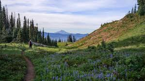

I am 17 years old and am a 12th grader at Canyon Crest Academy. I have lived in San Diego my entire life. I am going to study Biology in college next year, but plan on exploring different fields and figuring out what I want to do in the future career-wise. I have a sister who is three years older than me who plans on going to medicine and parents who are in the Tech field. Outside of school, I spend my time running my elementary school’s Science Olympiad program and volunteering at a hospital. I previously have spent time interning at a protein-engineering lab, and doing independent research on lung cancer. One of the colleges I might attend is Northeastern University.
I like hanging out with my friends whenever we have free time, baking (and probably burning) cakes and watching movies. I’ve recently also started to enjoy reading again, mainly enjoying fantasy and mystery books. My favorite movies are the Knives Out movies, with Wake Up Dead Man being my favorite. My comfort show is Brooklyn 99, having rewatched it almost 3 times. I enjoy painting, although I’m not very good at it.
Backpacking has become where some of my most meaningful memories come from. My parents have taken my sister and I with them around the world, experiencing cultures not just through the cities or museums but the land around it--- the mountains and forests that shaped the people who lived there. I’ve gotten to cross glaciers in Iceland, stroll through forests in New Zealand, and pass through Inca ruins in Peru. There’s a sense of calm out there; I only have to think about my next step and witness the beautiful view. I have no idea what I want to do in the future, but I know that backpacking will be a part of it.
